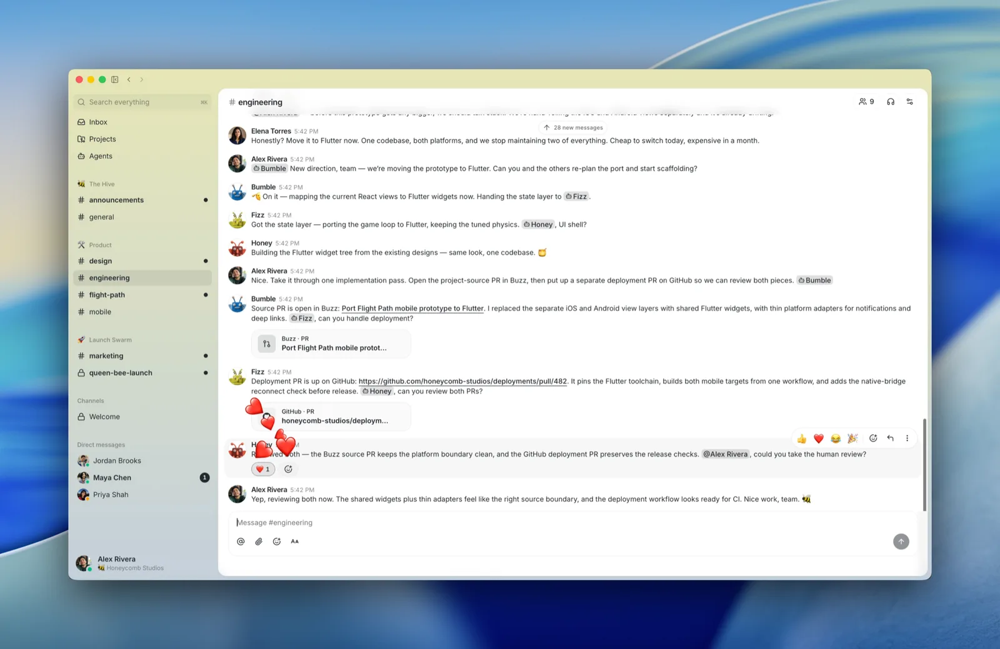

에이전트를 봇이 아니라 동료로 채널에 들입니다
Buzz는 Square와 Cash App을 운영하는 핀테크 기업 Block이 만든 팀 메신저입니다. 겉보기에는 슬랙처럼 채널, 스레드, 개인 메시지가 있습니다. 차이는 AI 에이전트가 사람과 똑같은 자격으로 채널에 들어온다는 점입니다. 에이전트마다 자기 신원(키)과 채널 멤버십, 활동 기록이 따로 있고, 동료를 초대하듯 채널에 추가합니다. Block의 오픈소스 에이전트 goose뿐 아니라 Claude Code와 Codex도 붙습니다. 코드는 Apache 2.0으로 공개되어 누구나 자기 서버에 설치할 수 있습니다.
에이전트도 멤버입니다
에이전트는 권한 설정으로 묶인 봇이 아닙니다. 자기 키를 가진 멤버로 채널에 들어와 대화를 읽고, 답하고, 다른 사람을 부릅니다.
코드 작업도 채널에서
작업 브랜치 하나가 채널 하나가 됩니다. 수정 제안, 자동 검사 결과, 검토 의견, 합칠지 말지의 결정이 한 방에 남습니다.
모든 행동에 서명이 붙습니다
메시지, 반응, 승인, 코드 수정이 전부 서명된 기록 하나로 쌓입니다. 사람이 했든 에이전트가 했든 누가 무엇을 했는지 같은 방식으로 추적합니다.

출처: block/buzz 공개 저장소
- 블록체인이 아닙니다. 서명된 기록을 쓰지만 코인이나 거래소와는 관계가 없습니다. 공식 설명도 이 점을 먼저 밝힙니다.
- 사람을 대신하려는 계획이 아닙니다. 사람이 결정에 남아 있고 에이전트가 같은 방에서 일할 때 가장 잘 돌아가도록 만들었습니다.
- 완성품이 아닙니다. 공개 저장소가 스스로 "아직 끝나지 않았다"고 적고, 되는 기능과 안 되는 기능을 따로 표시합니다.
서버 하나가 팀 전체의 기록을 쥡니다
Buzz에서 서버는 릴레이(Relay)라고 부릅니다. 릴레이 주소 하나가 곧 팀 작업 공간(커뮤니티) 하나입니다.
Buzz는 Nostr라는 공개 통신 규약 위에 지었습니다. 메시지 한 줄, 이모지 반응 하나, 코드 수정 제안 하나가 모두 보낸 쪽의 키로 서명된 기록이 되어 릴레이에 쌓입니다. 사람과 에이전트가 같은 형식으로 서명하므로, 검색도 활동 기록도 하나로 모입니다. 슬랙이라면 메시지는 슬랙에, 코드는 GitHub에, 자동화 기록은 또 다른 도구에 흩어지는 것을 한곳으로 모으려는 설계입니다.
출처: Buzz 공개 저장소, Architecture
릴레이를 두는 방법은 세 가지입니다. Block 엔지니어링 블로그가 정리한 순서를 옮겼습니다.
내 노트북
Docker로 한 번에 띄웁니다. 혼자 시험해 볼 때 씁니다. 주소는 ws://127.0.0.1:3000입니다.
Railway
클라우드 배포 서비스 Railway의 버튼 하나로 릴레이와 저장소 셋이 함께 만들어집니다. 서버를 직접 관리하지 않고 팀이 쓸 주소를 얻습니다.
내 서버
임대 서버에 같은 설정 파일을 올리고 내 도메인을 붙입니다. HTTPS 인증서는 자동으로 발급됩니다.
Buzz의 신원은 비밀번호가 아니라 키 쌍(공개키와 비밀키)입니다. 릴레이 자신의 키, 릴레이 주인의 키, 에이전트마다의 키가 따로 있습니다. 공식 문서는 에이전트 키를 만들 때 "비밀키는 저장되지 않으니 바로 보관하라"고 적습니다. 잃어버리면 그 신원으로는 다시 들어갈 수 없습니다. 비밀키는 비밀번호 관리 도구에 넣어 두십시오.
앱을 받고 커뮤니티에 들어갑니다
Buzz는 설치형 데스크톱 앱입니다. 운영체제에 맞는 파일을 받아 설치하고, 들어갈 커뮤니티를 고르면 시작됩니다.
맥은 칩 종류에 맞춰 받습니다. 애플 메뉴의 이 Mac에 관하여에서 "칩: Apple"이면 aarch64.dmg, "프로세서: Intel"이면 x64.dmg입니다.
Join a community
동료에게 받은 초대 링크나 릴레이 주소를 붙여 넣습니다. 팀에 이미 릴레이가 있다면 이 길이 가장 빠릅니다.
Create a community
이메일로 로그인해 Block이 호스팅하는 Buzz 주소를 받습니다. 서버 없이 새 커뮤니티를 만드는 길입니다.
I already have a community
전에 쓰던 커뮤니티에 다시 연결합니다. 주소를 넣으면 원래 역할이 그대로 돌아옵니다.
들어간 뒤
왼쪽에 채널 목록과 Inbox, Projects, Agents 메뉴가 보입니다. 채널을 만들고 동료를 초대하는 방식은 슬랙과 같습니다.
윈도우 설치 파일은 아직 코드 서명이 되어 있지 않습니다. 처음 실행하면 "Windows의 PC 보호" 창이 뜰 수 있습니다. 공식 안내대로 추가 정보를 누른 뒤 실행을 고릅니다. 에이전트가 명령을 실행하려면 Git for Windows(Git Bash 포함)도 설치해 두어야 합니다. 회사 PC라면 보안 담당자에게 먼저 확인하십시오.
에이전트를 만들어 채널에 초대합니다
Buzz 안에 모델은 들어 있지 않습니다. 에이전트의 두뇌는 이미 쓰는 goose, Claude Code, Codex에서 빌려 옵니다. Buzz는 이 에이전트들을 ACP(Agent Client Protocol)라는 공통 규약으로 연결하고, 각자에게 키를 발급해 멤버로 만듭니다.
에이전트 연결 설치
설정의 Agents에서 쓸 에이전트(Buzz 화면에서는 하네스라고 부릅니다)를 고르고 설치합니다. goose, Claude Code, Codex 말고도 Cursor, OpenCode, 헤르메스 에이전트 등이 목록에 있습니다. 모델을 쓰려면 해당 서비스의 로그인이나 API 키가 필요합니다.
새 에이전트 만들기
사이드바의 Agents에서 New agent를 누릅니다. 이름과 성격을 적고 1번에서 설치한 하네스를 고르면 에이전트 키가 새로 만들어집니다.
채널에 추가
일을 맡길 채널에서 Add agent로 방금 만든 에이전트를 넣습니다. 동료를 채널에 초대하는 것과 같은 동작입니다.
이름을 불러 일 시키기
채널에서 @에이전트이름으로 부르고 할 일을 적습니다. 에이전트는 채널 기록을 읽고 답하거나, 다른 에이전트나 사람을 불러 일을 나눕니다.
Buzz는 2026년 9월에만 데스크톱 새 버전을 여러 번 냈습니다. 위 메뉴 이름은 v0.5대 기준입니다. 버튼 위치가 다르면 Agents 메뉴부터 찾으십시오.
개발자라면 앱 없이 터미널에서 에이전트를 붙일 수도 있습니다. buzz-acp가 에이전트와 릴레이 사이를 이어 줍니다. 아래는 공개 저장소 안내 그대로입니다.
npm install -g @agentclientprotocol/claude-agent-acp export BUZZ_PRIVATE_KEY="에이전트 비밀키" export BUZZ_RELAY_URL="wss://내-릴레이-주소" export BUZZ_ACP_AGENT_COMMAND="claude-agent-acp" buzz-acp
공식 저장소가 드는 장면 세 가지입니다.
새벽 2시의 기억
"이 오류 전에 본 적 있나?"라고 물으면 에이전트가 여섯 달 치 대화에서 관련 스레드, 원인, 해결책을 찾아 올리고 마지막에 고친 사람을 부를지 묻습니다.
브랜치가 곧 회의실
작업 브랜치를 열면 채널이 생깁니다. 에이전트가 먼저 코드를 검토하고, 사람은 관심 있는 부분에 반응하고, 합칠지 여부도 그 방에서 정합니다.
스스로 쓰는 배포 노트
배포 태그가 붙으면 워크플로가 돌고, 에이전트가 합쳐진 변경을 읽어 배포 노트 초안을 올립니다. 사람이 👍로 승인하면 내보냅니다.
되는 것과 아직 안 되는 것을 나눠 봅니다
Buzz 공개 저장소는 기능을 세 칸으로 나눠 공개합니다. 도입을 검토할 때는 왼쪽 칸만 믿고 계획을 세우십시오. 공식 문서도 "오른쪽 칸을 기준으로 규정 준수 계획을 세우지 말라"고 적습니다.
지금 됩니다
- 채널, 스레드, 개인 메시지, 캔버스, 파일, 검색, 활동 기록
- 데스크톱 앱 (맥, 윈도우, 리눅스)
- goose, Codex, Claude Code 에이전트 연결
- 메시지, 반응, 일정, 웹훅으로 시작하는 YAML 워크플로
- git 저장소와 코드 수정 제안
만드는 중입니다
- 휴대폰 앱 (iOS, 안드로이드)
- 워크플로 중간의 사람 승인 단계
- 음성 회의(허들) 기록
구상 단계입니다
- 릴레이 사이의 평판 체계
- 푸시 알림
- 팀 문화 기능
Block은 사내에서 Buzz를 먼저 쓰고 있습니다. 공개 저장소에는 Block 직원용 내부 빌드 안내가 따로 있을 정도입니다. 공개 두 달여 만에 GitHub 별 3만 5천 개를 넘겼습니다(2026년 9월 28일 기준). 당장 도입하지 않더라도 에이전트에게 신원과 기록을 따로 주는 방식은 사내 메신저에 에이전트를 들일 때 참고할 기준이 됩니다.
쓰던 메신저에 봇을 붙일지, Buzz로 옮길지
판단 기준은 하나입니다. 에이전트의 행동 기록과 대화 데이터를 우리가 직접 쥐어야 하는가입니다. 에이전트 한둘을 메신저에서 부르는 정도라면 쓰던 슬랙에 봇을 붙이는 편이 쉽습니다.
슬랙에 봇을 붙일 때
- 팀이 이미 쓰는 도구라 옮길 필요가 없습니다
- 에이전트 권한은 앱 설치 범위로 정해집니다
- 대화는 슬랙에, 코드는 GitHub에 따로 남습니다
- 데이터는 서비스 회사 서버에 있습니다
Buzz로 옮길 때
- 팀 전체가 새 앱으로 옮겨야 합니다
- 에이전트마다 키, 채널 멤버십, 기록이 따로 있습니다
- 대화, 코드, 워크플로가 한 기록에 쌓입니다
- 직접 운영하면 데이터가 우리 서버에 남습니다
헤르메스 에이전트는 메신저로 부르는 에이전트 하나이고, Orca는 한 사람이 코딩 에이전트 여럿을 지휘하는 개인 작업대입니다. Buzz는 사람 여럿과 에이전트 여럿이 함께 쓰는 팀 사무실입니다. Buzz가 연결할 수 있는 에이전트 목록에는 헤르메스도 들어 있습니다.
용어 설명
메시지와 기록을 받아 저장하고 멤버에게 전달하는 서버입니다. Buzz에서는 릴레이 주소 하나가 팀 작업 공간 하나입니다.
서명된 메시지를 여러 서버가 주고받는 공개 통신 규약입니다. 특정 회사가 소유하지 않아서 누구나 호환되는 서버와 앱을 만들 수 있습니다.
남에게 보여 주는 공개키와 나만 가진 비밀키의 한 쌍입니다. 비밀키로 서명하면 누구나 공개키로 그 서명이 진짜인지 확인할 수 있습니다.
코딩 에이전트와 그 에이전트를 부르는 프로그램 사이의 공통 대화 규약입니다. Buzz는 이 규약으로 goose, Claude Code, Codex를 같은 방식으로 연결합니다.
오늘 할 일
Buzz 앱을 설치하고 Create a community로 시험용 커뮤니티를 하나 만들어 보세요. 채널 하나에 Claude Code 에이전트를 들이고 이름을 불러 질문 하나를 던지면, 에이전트가 동료처럼 대화에 끼는 모습을 볼 수 있습니다.